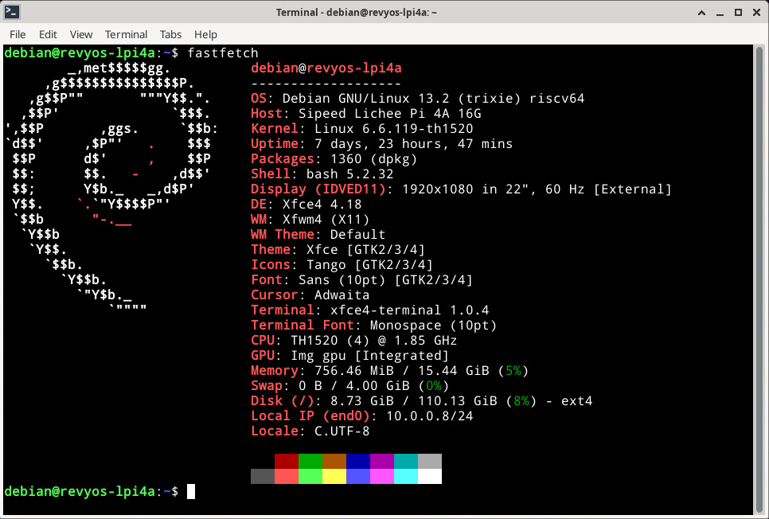
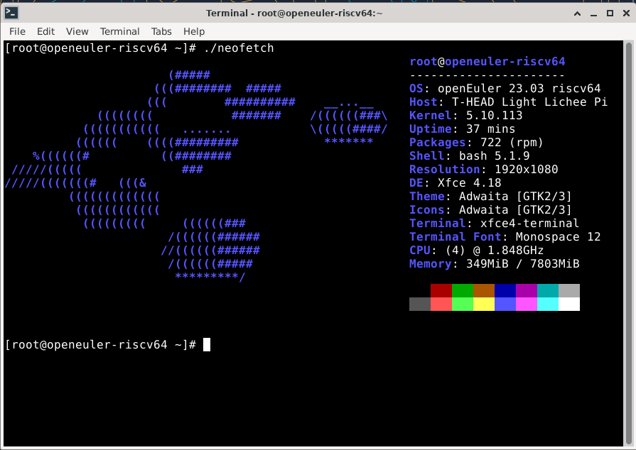
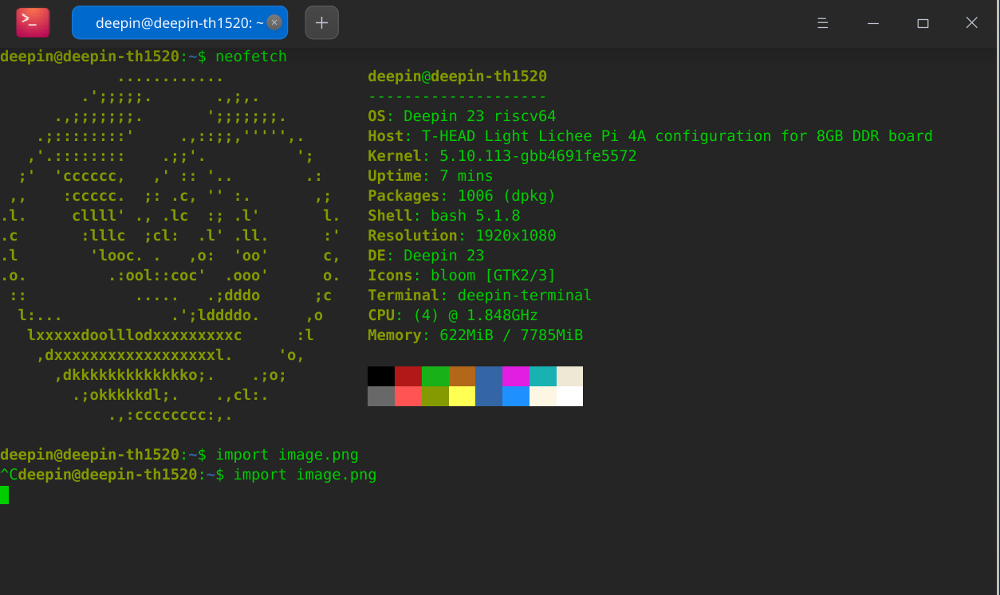
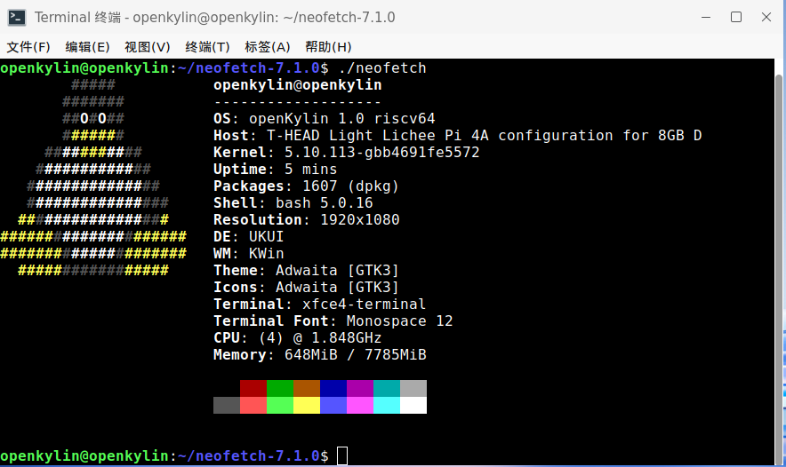
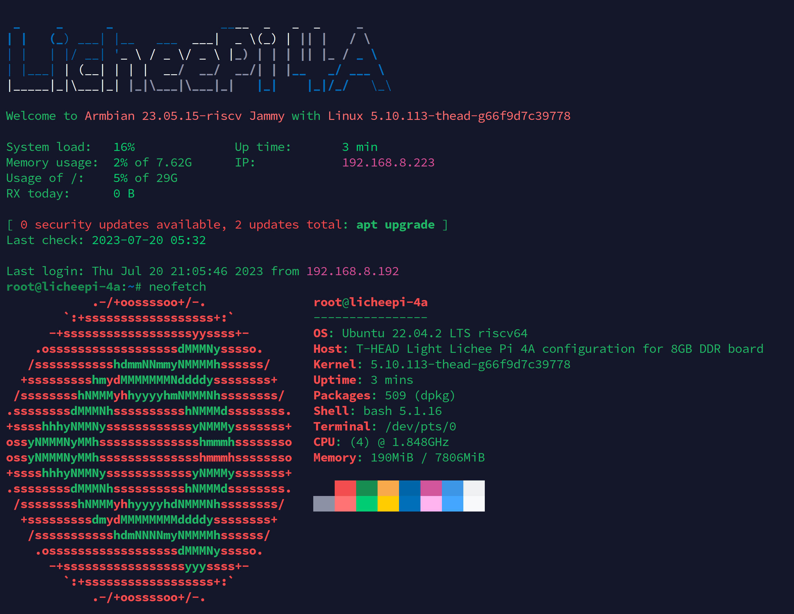
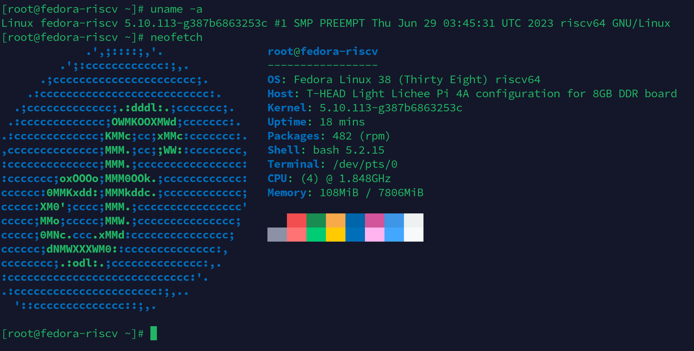
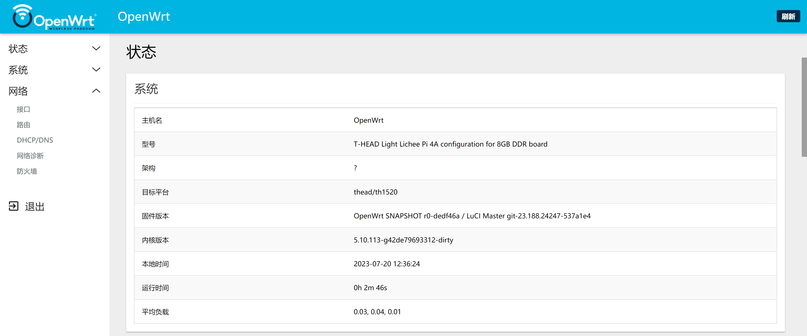
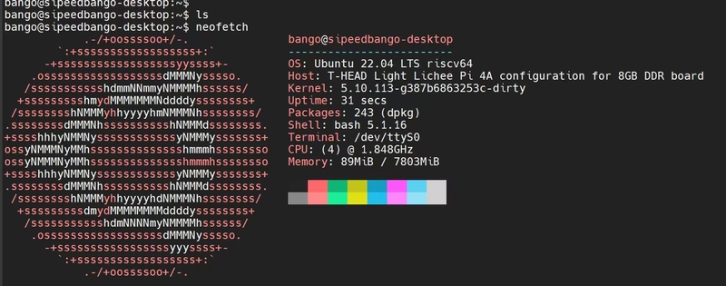
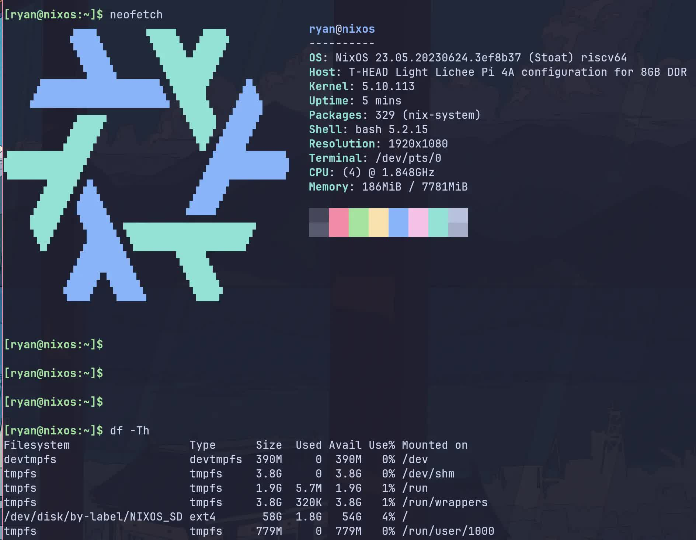
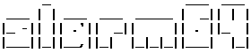

中文
中文镜像集合
更新历史
| 日期 | 版本 | 作者 | 更新内容 |
|---|---|---|---|
| 2026-01-30 | v1.2 | Kevin.MX |
|
| 2023-10-23 | v1.2 | ztd |
|
| 2023-07-14 | v1.1 | ztd |
|
| 2023-05-08 | v1.0 | wonder |
|
内核支持
目前玄铁 SDK / RevyOS 使用 Linux 6.6 内核：https://github.com/revyos/th1520-linux-kernel
主线 Linux 内核正在移植中，主要社区贡献者：Jisheng Zhang
RevyOS

下载地址：
ISCAS 镜像站：点我
百度网盘（≤20240602）：点我
Mega 云盘（≤20240602）：点我
此文档关于 RevyOS 的信息可能不是最新，请访问 RevyOS 文档站获取最新消息：https://docs.revyos.dev/
LPI4A_20240111_BASIC.zip
- 发布日期：2024年1月11日
- 内核：5.10
- 根文件系统：ext4, 4.3GB
- 主要预装软件包：
- 开发类 python3.11
- 办公类 libreoffice 套件
- 浏览器 chromium
- 媒体类 支持播放4K视频的播放器 Parole（支持硬件加速，推荐优先使用）、VLC、GIMP
- 更新记录：
20230706：
- HDMI 显示设备和 HDMI 音频设备识别问题
- 修复蓝牙问题，现在蓝牙设备功能正常，蓝牙耳机也能正常播放音频
- 修复桌面底部启动栏浏览器快捷方式不可用的问题，现在能点击这里进入 chromium
- 修复在长时间连接 USB 摄像头情况下，会导致 kernel panic 的问题
20230721：
- 修复16GB内存识别问题，需完全识别16GB内存请更新此镜像
20230912：
- 修复HDMI 音频在 chromium 下播放音质的问题
- 修复双屏异显时字体显示像素缺失的问题
20231023：
- 修复光标指针不准问题
- 修复NPU驱动 kernel 和 user 版本不匹配的问题
- 修复烧录4G以上根文件系统失败问题
20231214：
- 修复光标闪烁问题
- 添加 Wifi6 驱动支持
20240111：
- 修复MIPI屏幕亮度无法调节的问题
- 修复新 WIFI/BT 模块的蓝牙无法使用的问题 - 使用说明：
- 该镜像开启了自动登陆，默认登陆用户为 sipeed；
- 该镜像开启了免密码 sudo 功能；
- 该镜像会自动加载 NPU 相关的驱动，无需手动初始化;
- 该镜像同时支持 HDMI 和 MIPI 显示，需要通过启动菜单切换
- 启动菜单配置文件在 boot.ext4 中，路径为 /boot/extlinux/extlinux.conf。其中有三项，区别在于后缀，启动项1后缀为(HDMI only)，启动项2后缀为(HDMI and MIPI)，启动项3后缀为(rescue target)，若因为一些更改，导致无法正常进入系统，可以尝试使用启动项3进行修复。
- 默认启动项仅支持 HDMI 显示，有两种办法更换为支持 MIPI 显示的启动项：
- 连接串口工具，在开机时会出现启动菜单，按下数字键2即可选择第二项启动，该方法仅针对当前这次启动生效；
- 修改 extlinux.conf 文件，将文件中的 default l0 更改为 default l1 即可实现修改默认启动项为支持 MIPI 显示的镜像。
- 该压缩包包含两种 u-boot 烧录时请注意文件名中的后缀和设备相关参数对应
- u-boot 带 16g 后缀的为支持 16g 内存的u-boot，不带后缀的为支持 8g 内存的 u-boot
- 已知问题：
LPI4A_20240111_FULL.zip
- 发布日期：2024年1月11日
- 内核：5.10
- 根文件系统：ext4, 9.7GB
- 主要预装软件包：
- 开发类 python3.11、GCC、VScode、Kicad（含示例工程）、AI环境（含预编译yolov5n/yolov5s可执行示例）
- 办公类 libreoffice 套件
- 浏览器 chromium
- 媒体类 支持播放4K视频的播放器 Parole（支持硬件加速，推荐优先使用；含示例4k视频）、VLC、GIMP、视频编辑软件 Kdenlive（含示例视频素材）、kodi
- 游戏 SuperTuxKart
- 其他 btop、neofetch
- 更新记录：
20230706：
- HDMI 显示设备和 HDMI 音频设备识别问题
- 修复蓝牙问题，现在蓝牙设备功能正常，蓝牙耳机也能正常播放音频
- 修复桌面底部启动栏浏览器快捷方式不可用的问题，现在能点击这里进入 chromium
- 修复在长时间连接 USB 摄像头情况下，会导致 kernel panic 的问题
20230721：
- 修复16GB内存识别问题，需完全识别16GB内存请更新此镜像
20230912：
- 修复HDMI 音频在 chromium 下播放音质的问题
- 修复双屏异显时字体显示像素缺失的问题
20231023：
- 修复光标指针不准问题
- 修复NPU驱动 kernel 和 user 版本不匹配的问题
- 修复烧录4G以上根文件系统失败问题
20231214：
- 修复光标闪烁问题
- 添加 Wifi6 驱动支持
20240111：
- 修复MIPI屏幕亮度无法调节的问题
- 修复新 WIFI/BT 模块的蓝牙无法使用的问题 - 使用说明：
- 该镜像占用空间较大，内测版由于 EMMC 容量只有 8G，故无法使用本镜像，内测版用户请使用 BASIC 版本镜像；
- 该镜像开启了自动登陆，默认登陆用户为 sipeed；
- 该镜像开启了免密码 sudo 功能；
- 该镜像会自动加载 NPU 相关的驱动，无需手动初始化;
- 该镜像同时支持 HDMI 和 MIPI 显示，需要通过启动菜单切换
- 启动菜单配置文件在 boot.ext4 中，路径为 /boot/extlinux/extlinux.conf。其中有三项，区别在于后缀，启动项1后缀为(HDMI only)，启动项2后缀为(HDMI and MIPI)，启动项3后缀为(rescue target)，若因为一些更改，导致无法正常进入系统，可以尝试使用启动项3进行修复。
- 默认启动项仅支持 HDMI 显示，有两种办法更换为支持 MIPI 显示的启动项：
- 连接串口工具，在开机时会出现启动菜单，按下数字键2即可选择第二项启动，该方法仅针对当前这次启动生效；
- 修改 extlinux.conf 文件，将文件中的 default l0 更改为 default l1 即可实现修改默认启动项为支持 MIPI 显示的镜像。
- 该压缩包包含两种 u-boot 烧录时请注意文件名中的后缀和设备相关参数对应
- u-boot 带 16g 后缀的为支持 16g 内存的u-boot，不带后缀的为支持 8g 内存的 u-boot
- 已知问题：
Sipeed官方镜像
LicheePi 4A 的镜像不定期更新中，初期的镜像可能不太稳定，或者无法发挥 TH1520 的完全性能，请关注本页面，获取最新镜像。
Sipeed 官方镜像基于 Debian 系统修改适配。
默认镜像的帐号密码配置如下：
账户：debian，密码： debian；
账户：sipeed，密码：licheepi；
root 账户默认没有设置密码。
内存问题修复说明
重要提示：2023.8.1 之前发出的 16GB 内存板存在错误图像，无法正确识别 16GB 内存（运行大型应用程序可能导致系统崩溃），请按照以下说明修复此错误。
请使用下面的命令烧录新的 u-boot 到板子中，16G 内存使用的 u-boot 在网盘链接中，也能在这个链接中下载
相关文件在 20230803_tempfix.zip 压缩包中。
（0721及以后版本的镜像内存能正常使用，无需替换为此处的文件）
sudo ./fastboot flash ram ./images/u-boot-with-spl-lpi4a-16g.bin
sudo ./fastboot reboot
sleep 1
sudo ./fastboot flash uboot ./images/u-boot-with-spl-lpi4a-16g.bin
# 若自己使用的 boot.ext4 中没有 16G ddr 对应的设备树，则需要再烧录 16G ddr 对应的 boot.ext4
sudo ./fastboot flash boot ./images/boot.ext4
OpenWRT
Android
Readme and image download link: Click me
安卓13 SDK 仍处于初期状态，会逐步修复其中的问题
Sipeed 官方镜像的网盘下载链接中提供了 Android 13的预编译镜像文件，下载后烧录方式如下，fastboot工具请使用从这里下载的版本：
https://developer.android.com/tools/releases/platform-tools
网盘中也有提供 fastboot 的文件
#烧录uboot并初始化boot环境变量
fastboot flash ram u-boot-with-spl.bin
fastboot reboot
fastboot flash uboot u-boot-with-spl.bin
#烧录各个分区
#在非boot烧写模式，可以在uboot的命令行中输入命令fastboot usb 0，单独烧录分区
fastboot flash bootpart bootpart.ext4
fastboot flash boot boot.img
fastboot flash vendor_boot vendor_boot.img
fastboot flash super super.img
fastboot flash userdata userdata.img
fastboot flash vbmeta vbmeta.img
fastboot flash vbmeta_system vbmeta_system.img
#初始化metadata和misc分区
fastboot erase metadata
fastboot erase misc
第三方镜像
这里整理了第三方提供的镜像，仅供用户体验，sipeed 不保证此类镜像的可用性，稳定性。
openEuler

Download: Click me
Twitter: https://twitter.com/openEuler
DeepinOS 深度

Readme and image download link: Click me
openKylin

Readme link: Click me
openKylin V1.0 Download address
armbian (official build-framework, use RV64GC toolchain)

Project address: Click me
Download and Infomations: Click me
armbian (unofficial build-framework, use T-Head optimized toolchain)


Project address: Click me
Fedora (Fedora-V Force)
Link: https://images.fedoravforce.org/LicheePi%204A
Fedora (chainsx)

Project address: Click me
OpenWrt (unofficial)

Project address: Click me
Ubuntu (rootfs only)

NixOS (unofficial)

Project address: Click me
Gentoo
Project address: Click me
下面链接说明如何从stage3制作一个Gentoo Linux系统
Deplay Gentoo Linux Click me
slarm64

Project address: Click me
Download: Click me
irradium
irradium - source based Linux distribution CRUX adhering to ideology keep it simple, has its own package system, also supports the port system.